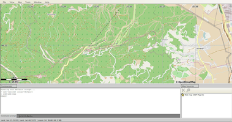
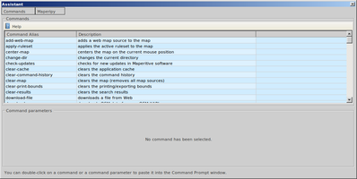
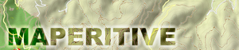

Maperitive
Dieser Artikel wurde für die folgenden Ubuntu-Versionen getestet:
Ubuntu 14.04 Trusty Tahr
Zum Verständnis dieses Artikels sind folgende Seiten hilfreich:
Maperitive  ist ein Karten-Renderer, welcher in Echtzeit Daten von OpenStreetMap aufbereiten kann. Zusätzlich können Daten aus anderen Quellen aufbereitet werden. Man definiert, welche Daten angezeigt und in welcher Art und Weise diese präsentiert werden. So können aus den vorhandenen Daten zum Beispiel persönliche Wander- oder Fahrradkarten erstellt und die Ergebnisse anschließend exportiert und für den Druck verwendet werden.
ist ein Karten-Renderer, welcher in Echtzeit Daten von OpenStreetMap aufbereiten kann. Zusätzlich können Daten aus anderen Quellen aufbereitet werden. Man definiert, welche Daten angezeigt und in welcher Art und Weise diese präsentiert werden. So können aus den vorhandenen Daten zum Beispiel persönliche Wander- oder Fahrradkarten erstellt und die Ergebnisse anschließend exportiert und für den Druck verwendet werden.
|  |
| Maperitive |
Installation¶
Vorbereitung¶
Um das Programm verwenden zu können, müssen im Vorfeld folgende Pakete installiert [1] werden:
libmono-winforms2.0-cil
mono-devel
 mit apturl
mit apturl
Paketliste zum Kopieren:
sudo apt-get install libmono-winforms2.0-cil mono-devel
sudo aptitude install libmono-winforms2.0-cil mono-devel
Maperitive¶
Anschließend muss man die aktuell Version Maperitive-latest.zip von der Projektseite  herunterladen und entpacken [2]. Danach wechselt man in das Programmverzeichnis und setzt die Ausführrechte [3] für Maperitive.sh. Über
herunterladen und entpacken [2]. Danach wechselt man in das Programmverzeichnis und setzt die Ausführrechte [3] für Maperitive.sh. Über Maperitive.sh kann das Programm anschließend aus dem Verzeichnis heraus gestartet [4] werden. Es empfiehlt sich einen Menüeintrag zu erstellen [5].
|  |
| Assistant |
Bedienung¶
Kartendaten¶
Es bestehen mehrere Möglichkeiten, um an das Material zu gelangen. Eine Möglichkeit besteht darin, diese direkt von OpenStreetMap (OSM) zu beziehen. Hierzu ruft man die Homepage von OSM auf, wählt einen kleinen Bereich aus und lädt über "Export → Export" die map.osm herunter.
Es können aber auch kleine Regionen aus JOSM (via "Datei → Speichern") oder Daten von Geofabrik bzw. cloudmade verwendet werden. Die Daten müssen in den Formaten XML, .osm.bz2 oder .osm.pbf vorliegen. Diese Daten werden über "File → Open Map Source..." importiert und sind unter "Map Sources" sichtbar.
Hinweis:
Maperitive bietet ebenfalls die Möglichkeit, Daten herunterzuladen. Dafür muss zunächst ein Rahmen gesetzt werden ("Map → Set Geometry Bounds"). Über "Map → Download OSM Data" lädt das Programm anschließend Daten von OSM zum aktuellen Ausschnitt aus dem Internet herunter - diese werden aber nicht gespeichert.
Darstellungsregeln¶
Über "Map → Edit Rendering Rules" können die Werte den Wünschen entsprechend vorgenommen werden. Die Möglichkeiten sind auf den Dokumentationsseiten des Projekts im Detail beschrieben.
Export¶
Über "Tools" kann das Ergebnis in das gewünschte Format exportiert werden.
Tastenkürzel¶
| Tastenkürzel | |
| Taste(n) | Funktion |
 | Karten bewegen durch drücken der Taste und bewegen der Maus |
 (Mausrad) (Mausrad) | Zoomstufe |
| F1 | Assistenten aufrufen |
| F4 | Einstellungen |
| Strg + ⏎ | Command Prompt Aktivierung |

- Erstellt mit Inyoka
-
 2004 – 2017 ubuntuusers.de • Einige Rechte vorbehalten
2004 – 2017 ubuntuusers.de • Einige Rechte vorbehalten
Lizenz • Kontakt • Datenschutz • Impressum • Serverstatus -
Serverhousing gespendet von